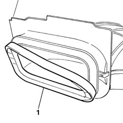
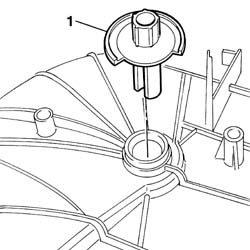
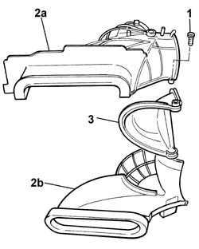

5040C74 fan unit/external air intake and recirculation flap, l.h. or r.h. - dismantle and rebuild
- Path
- Procedures > 50 AUXILIARY UNITS > 5040 AIR CONDITIONING CASING AND COMPONENTS > 5040C air conditioner box and components > 5040C74 fan unit/external air intake and recirculation flap, l.h. or r.h. - dismantle and rebuild
- Kind
- repair procedure (removal / refitting; the operation number is the code)
- Applies to
- all engines; all production periods
- Interactive page
- https://sloeber94.github.io/elrnDB-fPnd/en/#/2752899
Applies to: all engines; all production periods
 Removing
Removing
 Refitting
Refitting1. Using a suitable tool, partially remove the weather strip.

Applies to: all engines; all production periods
1. Using a suitable tool, prise off and remove the air intake and recirculation flap control sprocket.

Applies to: all engines; all production periods
1. Undo the retaining bolts.
2. Separate the half shells (2a) and (2b).
3. Remove the air intake and recirculation flap.

Applies to: all engines; all production periods
Refitting
RemovingFit the air intake and recirulcation flap between the two half shells and tighten the fixing bolts.
Fit the air intake and recirculation control sprocket in its seating and check that it is secure.
Check the condition of the weather strip, and if necessary replace it.
Fit the weather strip.